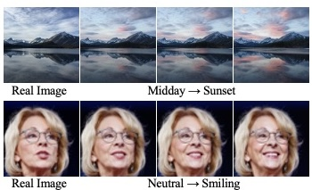
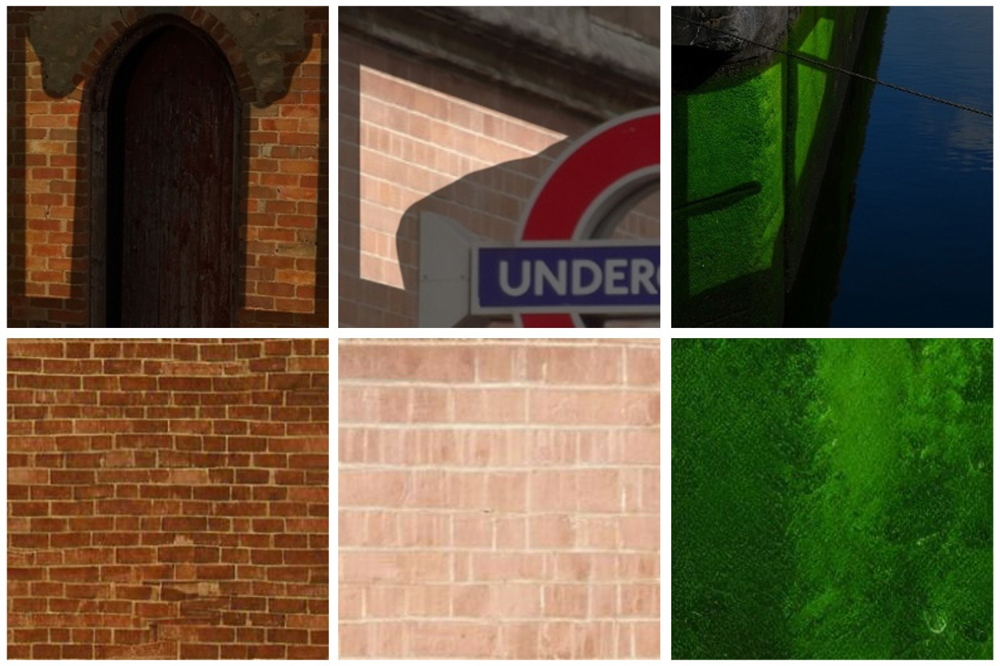
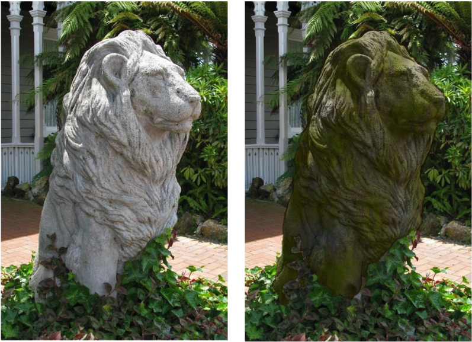
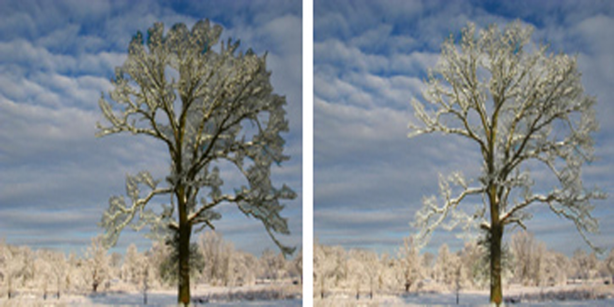

Guoqing Hao
Assistant Professor · Aoyama Gakuin University
I am an assistant professor at Aoyama Gakuin University. I obtained my Ph.D. from the University of Tsukuba under the supervision of Prof. Satoshi Iizuka and Prof. Kazuhiro Fukui.
I am broadly interested in building systems that can understand, manipulate, and create visual content.
Selected Publications

arXiv 2026 · Preprint
FlowSlider: Training-Free Continuous Image Editing via Fidelity-Steering Decomposition

SIGGRAPH Asia 2023
Diffusion-based Holistic Texture Rectification and Synthesis


BMVC 2020
Image Harmonization with Attention-based Deep Feature Modulation